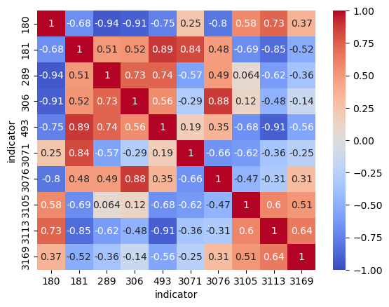

Sotkanet indicators#
In this notebook we fetch health indicators on municipalities from Sotkanet.
Show code cell source
import requests
import pandas as pd
import seaborn as sns
from urllib.parse import urlencode
Show code cell source
url = "https://sotkanet.fi/rest/1.1/indicators"
# url = "https://sotkanet.fi/sotkanet/api/"
HEADERS = {
"User-Agent": "agent"
}
Show code cell source
base_url = "https://sotkanet.fi/rest/1.1/json?"
params = {
"indicator": "3231",
"years": "2021",
"genders": "total",
"format": "json"
}
response = requests.get(base_url, params=params, headers=HEADERS)
Show code cell source
# 1. Get list of municipalities (regions)
def get_municipalities():
url = "https://sotkanet.fi/rest/1.1/regions"
response = requests.get(url, headers=HEADERS)
regions = response.json()
# Filter for municipalities (KUNTA in Finnish)
municipalities = [r for r in regions if r.get('category') == 'KUNTA']
return pd.DataFrame(municipalities)
# 2. Search health indicators
def search_indicators(keyword="syntymäpaino"):
url = "https://sotkanet.fi/rest/1.1/indicators"
response = requests.get(url, headers=HEADERS)
indicators = response.json()
# Filter by keyword (case-insensitive)
health_indicators = [i for i in indicators if keyword.lower() in i['title']['fi'].lower()]
return pd.DataFrame(health_indicators)
def get_indicator_data_mult(indicator_id, years, genders=["total", "male", "female"]):
base_url = "https://sotkanet.fi/rest/1.1/json"
params = {
"indicator": indicator_id,
}
# Add years and genders as repeated parameters
for year in years:
params[f"years"] = year
for gender in genders:
params[f"genders"] = gender
# Manually encode the URL
url = f"{base_url}?indicator={indicator_id}"
for year in years:
url += f"&years={year}"
for gender in genders:
url += f"&genders={gender}"
response = requests.get(url, headers=HEADERS)
return response.json()
# 3. Fetch indicator data for municipalities
def get_indicator_data(indicator_id, years=range(2018, 2023)):
base_url = "https://sotkanet.fi/rest/1.1/json?"
#params = {
## "indicator": indicator_id,
# "years": ",".join(map(str, years)),
## "gender": "total",
# "format": "json"
#}
params = {
"indicator": indicator_id,
}
response = requests.get(base_url, params=params, headers=HEADERS)
return pd.DataFrame(response.json())
Show code cell source
municipalities = get_municipalities()
print(f"Found {len(municipalities)} municipalities")
Found 308 municipalities
Show code cell source
# Configuration
HEADERS = {"User-Agent": "MunicipalityAnalysis/1.0"}
SOTKANET_BASE = "https://sotkanet.fi/rest/1.1/json?"
def get_sotkanet_data(indicator_ids, years):
"""Fetch data for multiple indicators from Sotkanet"""
df_list = []
for indicator_id in indicator_ids:
url = f"{SOTKANET_BASE}indicator={indicator_id}"
for year in years:
url += f"&years={year}"
url += "&genders=total"
response = requests.get(url, headers=HEADERS)
data = response.json()
# Convert to DataFrame
temp_df = pd.DataFrame(data)
temp_df['indicator_id'] = indicator_id
df_list.append(temp_df)
final_df = pd.concat(df_list, ignore_index=True)
return final_df
Show code cell source
# Selected indicators.
indicators = {
180: 'Measure of educational level',
181: 'Unemployed people, as % of labour force',
# 190: 'Household-dwelling units with children living in overcrowded conditions, as % of all households with children',
# 191: 'Placements outside the home for those aged 0-17, as % of total population of same age (THL)',
289: 'Heavy drinking at least once a month, as % of all pupils in 8th and 9th year of comprehensive school',
306: 'Disability pension recipients aged 25-64, as % of total population of the same age',
493: 'Social assistance, recipient persons during year, as % of total population',
3105: 'Alcohol mortality per 100 000 inhabitant',
3169: 'Parturients who smoked during pregnancy, % of parturients',
3113: 'Offences against life and health recorded by the police per 1000 inhabitants',
# 3219: 'Those aged 17 - 24 not in education or training, as % of total population of same age',
3071: 'Persons who are difficult to employ (structural unemployment), as % of persons aged 15 - 64',
3076: 'Voting turnout in municipal elections, %',
# 4404: 'Daily smokers (%)'
# 5333: 'Municipality employs a designated expert, planning officer or similar to coordinate health and welfare promotion'
# 5338: 'Performance indicator average (health and welfare coefficient)'
}
years = list(range(1990, 2024))
Show code cell source
[print(f"Indicator {k}: {v}") for (k, v) in indicators.items()];
Indicator 180: Measure of educational level
Indicator 181: Unemployed people, as % of labour force
Indicator 289: Heavy drinking at least once a month, as % of all pupils in 8th and 9th year of comprehensive school
Indicator 306: Disability pension recipients aged 25-64, as % of total population of the same age
Indicator 493: Social assistance, recipient persons during year, as % of total population
Indicator 3105: Alcohol mortality per 100 000 inhabitant
Indicator 3169: Parturients who smoked during pregnancy, % of parturients
Indicator 3113: Offences against life and health recorded by the police per 1000 inhabitants
Indicator 3071: Persons who are difficult to employ (structural unemployment), as % of persons aged 15 - 64
Indicator 3076: Voting turnout in municipal elections, %
Show code cell source
data = get_sotkanet_data(indicators, years)
Show code cell source
data.dtypes
indicator int64
region int64
year int64
gender object
value float64
indicator_id int64
absValue float64
dtype: object
Show code cell source
sotka_corr = \
(data[["indicator", "year", "value"]]
.pivot_table(
index=["year"],
columns="indicator",
values="value")
.corr())
Show code cell source
sns.heatmap(sotka_corr, annot=True, cmap='coolwarm', vmin=-1, vmax=1,
xticklabels=1, yticklabels=1);

Show code cell source
# Get current municipality codes (KUNTA regions)
def get_municipality_codes():
url = "https://sotkanet.fi/rest/1.1/regions"
response = requests.get(url, headers=HEADERS)
regions = pd.DataFrame(response.json())
return regions[regions['category'] == 'KUNTA'][['code', 'title']]
municipalities = get_municipality_codes()
municipalities['code'] = municipalities['code'].astype('int')
Show code cell source
# Merge with data
final_data = data.merge(
municipalities,
left_on='region',
right_on='code',
how='left'
)
final_data = final_data.dropna(subset=['title'])
# final_data = final_data.rename(columns={'title': 'municipality_name'})
# final_data = final_data[['code', 'municipality_name', 'year', 'indicator_id', 'value']]
Show code cell source
# get the municipality name
final_data['municipality'] = final_data.title.map(lambda x: x['fi'])
Show code cell source
total_migri = pd.read_csv("data/total_binned_mun_migri.csv", index_col=0)
Show code cell source
print(f"Missing Sotkanet data as compared to the Statistics Finland municipality migration dataset.")
set(total_migri.Arrival.unique()).difference(
set(final_data.municipality.unique())
)
# len(total_migri.Arrival.unique())
Missing Sotkanet data as compared to the Statistics Finland municipality migration dataset.
{'Alavus',
'Eura',
'Hollola',
'Hyvinkää',
'Hämeenlinna',
'Iisalmi',
'Jakobstad',
'Janakkala',
'Kajaani',
'Kangasala',
'Kankaanpää',
'Kemi',
'Kerava',
'Kontiolahti',
'Korsholm',
'Kouvola',
'Laukaa',
'Lempäälä',
'Liperi',
'Loviisa',
'Mariehamn',
'Naantali',
'Pargas',
'Pieksämäki',
'Porvoo',
'Raahe',
'Raisio',
'Rauma',
'Riihimäki',
'Salo',
'Sastamala',
'Savonlinna',
'Seinäjoki',
'Siilinjärvi',
'Sipoo',
'Sotkamo',
'Tornio',
'Turku',
'Tuusula',
'Ulvila',
'Uusikaupunki',
'Valkeakoski',
'Varkaus',
'Vihti',
'Ylöjärvi',
'Äänekoski'}